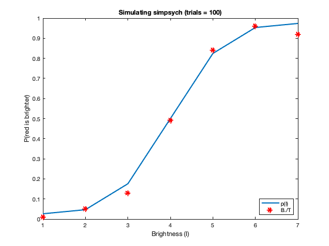

Contents
clear; close all; clc;
a)
I = 1:10; lambda = 0.05; mu = [5, 4]; sigma = [2, 3]; fig1 = figure(); for i = 1:length(mu) gauss_cdf = normcdf(I, mu(i), sigma(i)); p = lambda/2 + (1-lambda) * gauss_cdf; plot(I, p, 'DisplayName', sprintf('p%d',i), 'LineWidth', 2) hold on; end xlabel('Brightness (I)') ylabel('P(red is brighter)') title('Psychometric functions') legend('Location', 'southeast')

The two curves are sigmoidal or psychometric functions and saturate to 1 as the intensity is increased. The two curves differ in their slopes. Curve p1 has a steeper slope compared to the curve p2. This implies that the probability of the subject saying that "The red spot is brighter" increases rapidly with small changes in brightness in case of p1 but is rather slow in case of curve p2. We can also see that the curve p1 is in general above the curve p1 indicating that for the same intensity values, the probability of the subject saying that "The red spot is brighter" is higher in the case of p2.
Changing the mean of the psychometric function shifts the curve to the right along the brightness axis as increasing the mean results in increasing the threshold for deciding the response. This can be seen clearly in the figure below:
I = 1:10; lambda = 0.05; mu = [1, 3, 6]; sigma = [2, 2, 2]; fig2 = figure(); for i = 1:length(mu) gauss_cdf = normcdf(I, mu(i), sigma(i)); p = lambda/2 + (1-lambda) * gauss_cdf; plot(I, p, 'DisplayName', sprintf('Mean = %d',mu(i)), 'LineWidth', 2) hold on; end xlabel('Brightness (I)') ylabel('P(red is brighter)') title('Psychometric functions (varying mean)') legend('Location', 'southeast')
Changing the standard deviation of the psychometric functions does not affect the threshold but affects the slope of the curve. Hence increasing the standard deviation would flatten the curve. Specifically, it will decrease the probability of calling "Red is brighter" at higher intensity levels but increase the probability of calling "Red is brighter" at lower intensity levels. This can be seen clearly in the figure below:
I = 1:10; lambda = 0.05; mu = [3, 3, 3]; sigma = [1, 2, 4]; fig3 = figure(); for i = 1:length(mu) gauss_cdf = normcdf(I, mu(i), sigma(i)); p = lambda/2 + (1-lambda) * gauss_cdf; plot(I, p, 'DisplayName', sprintf('Stdev = %d',sigma(i)), 'LineWidth', 2) hold on; end xlabel('Brightness (I)') ylabel('P(red is brighter)') title('Psychometric functions (varying standard deviation)') legend('Location', 'southeast')
The range of p(I) is [0:1]. This range is appropriate because p(I) is a probability of the subject making a decision. The probability makes sense only in the range 0 to 1 and thus justifies the range of p(I).
b)
The function simpsych is defined at the end of the file.
c)
T = ones(1, 7) * 100; I = 1:7; lambda = 0.05; mu = 4; sigma = 1; B = simpsych(lambda, mu, sigma, I, T); gauss_cdf = normcdf(I, mu, sigma); p = lambda/2 + (1 - lambda) * gauss_cdf; fig4 = figure(); plot(I, p, 'DisplayName', 'p(I)', 'LineWidth', 2) hold on; plot(I, B./T, 'r*-', 'DisplayName', 'B./T', 'LineWidth', 2) xlabel('Brightness (I)') ylabel('P(red is brighter)') title(sprintf('Simulating simpsych (trials = %d)', 100)) legend('Location', 'southeast')
d)
T = ones(1, 7) * 10; I = 1:7; lambda = 0.05; mu = 4; sigma = 1; B = simpsych(lambda, mu, sigma, I, T); gauss_cdf = normcdf(I, mu, sigma); p = lambda/2 + (1 - lambda) * gauss_cdf; fig5 = figure(); plot(I, p, 'DisplayName', 'p(I)', 'LineWidth', 2) hold on; plot(I, B./T, 'r*-', 'DisplayName', 'B./T', 'LineWidth', 2) xlabel('Brightness (I)') ylabel('P(red is brighter)') title(sprintf('Simulating simpsych (trials = %d)', 10)) legend('Location', 'southeast')
Function
function B = simpsych(lambda, mu, sigma, I, T) loop_size = length(I); B = zeros(1, loop_size); gauss_cdf = normcdf(I, mu, sigma); p = lambda/2 + (1 - lambda) * gauss_cdf; for k = 1:loop_size %yesses = 0; trial_rand = rand(1, T(k)); yesses = trial_rand < p(k); B(:, k) = sum(yesses); end end